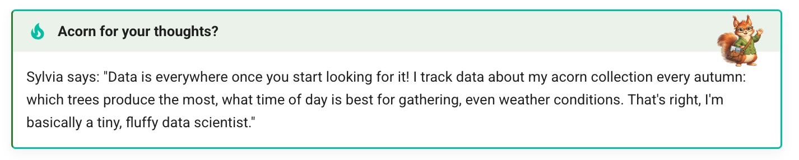

Pedagogical Agent
A pedagogical agent is a visual mascot character embedded in a textbook or learning environment that guides students through activities, provides encouragement, and makes abstract content feel more approachable. Research on the persona effect (coined by James Lester) shows that the mere presence of a lifelike character improves learner engagement and perception of the learning experience.
Related Terms
| Term | Emphasis |
|---|---|
| Animated pedagogical agent | Character with visual movement or animation |
| Learning companion | Character that learns alongside the student rather than acting as authority |
| Motivational agent | Primary role is encouragement rather than direct instruction |
| Margin character | Print-textbook tradition of illustrated characters in margins with tips |
Why Use a Pedagogical Agent?
- Engagement — A consistent character gives the textbook a personality that students connect with
- Wayfinding — The agent signals special content types (tips, challenges, reflections) at a glance
- Encouragement — Phrases from the agent normalize struggle and celebrate progress
- Branding — A distinctive mascot makes the course memorable and builds community identity
Implementing a Pedagogical Agent in MkDocs Material
There are three progressively richer ways to bring a pedagogical agent into an intelligent textbook built with MkDocs Material.
Method 1: Inline Image with Markdown
The simplest approach is to place the agent image directly
in a page using the attr_list Markdown extension
(which must be enabled in mkdocs.yml).
1 2 3 4 5 6 | |
This renders the image floated to the right of the surrounding
text. The width="100" attribute constrains the image size, and
align="right" wraps the text around it. This is the technique
used on the About page of this site, where our
mascot Nell appears beside the introductory text:
1 2 3 4 5 6 7 | |
This method requires no custom CSS or JavaScript — only the
image file and the attr_list Markdown extension.
Method 2: Custom Admonition with CSS
For a richer experience, you can create a custom admonition type that automatically displays the agent's icon in the corner of a callout box. This lets content authors simply write a standard admonition and have the mascot appear without manually inserting images.
CSS
Add the following to your docs/css/extra.css. This example
uses a class called companion-agent and references the
agent icon at docs/img/nell-colored.png:
1 2 3 4 5 6 7 8 9 10 11 12 13 14 15 16 17 18 19 20 21 22 23 24 25 26 27 28 29 30 31 32 33 34 | |
Note that the ::after pseudo-element is placed on the
.admonition-title rather than the admonition container
itself. MkDocs Material applies overflow: hidden to the
admonition body, which clips absolutely positioned children.
Attaching the icon to the title element avoids this problem.
Tuning the Icon Position
The exact placement of the mascot icon depends on your image dimensions and how much of the title bar you want it to overlap. Here are the key CSS properties to adjust:
| Property | What it controls | Example |
|---|---|---|
padding-top on .admonition-title |
Height of the title bar — increase to give the icon more vertical room | 14px makes the title bar taller |
top on ::after |
Vertical offset of the icon within the title bar — positive moves down, negative moves up | 1px sits just inside the top edge |
right on ::after |
Horizontal offset from the right edge — smaller (or negative) moves the icon closer to the edge | -4px pushes the icon to the far right |
width / height on ::after |
Size of the icon — keep equal to preserve aspect ratio | 48px is a good default; use 32px on mobile |
opacity on ::after |
Transparency of the icon — 1.0 is fully opaque, lower values fade it into the background |
0.9 is slightly transparent |
A typical tuning workflow:
- Start with the defaults above
- Adjust
padding-topon the title until the bar is tall enough for your icon - Adjust
topandrighton the::afterto position the icon where you want it - Use your browser's developer tools (right-click the icon area, Inspect) to live-edit values before committing them to
extra.css - Check the mobile breakpoint (
@media max-width: 600px) — you will usually want a smaller icon and tighter margins on small screens
Markdown Usage
With the CSS in place, content authors write a standard MkDocs Material admonition using the custom type:
1 2 3 4 5 | |
Live Example
The admonition below is rendered using the CSS above, which is active on this site. Note how Nell's icon appears in the upper-right corner of the title bar:
Nell Says
Remember, the best way to learn a new concept is to connect it to something you already know. Check the learning graph to see what prerequisites you've already mastered!
Nell's Study Tip
Try explaining this concept to a friend. Teaching is one of the most powerful ways to solidify your own understanding!
Method 3: Automatic Detection with JavaScript
The most flexible approach adds JavaScript that automatically applies the mascot styling whenever an admonition title mentions the agent's name or catchphrases. This means authors never need to remember a special admonition type — they just write naturally and the mascot appears.
JavaScript
Add the following to docs/js/extra.js:
1 2 3 4 5 6 7 8 9 10 11 12 13 14 15 16 17 18 19 | |
Now any admonition whose title contains the word "Nell" will automatically receive the mascot icon:
1 2 3 4 5 6 7 8 | |
Both admonitions above will display the agent icon in the
upper-right corner, even though they use standard admonition
types (tip and note).
Case Study: Sylvia the Squirrel

The AP Statistics Course provides an excellent real-world example of a fully integrated pedagogical agent. The mascot is Sylvia, a friendly red squirrel whose visual identity is woven into every layer of the site.
Character Design
Sylvia has a detailed persona that reinforces the course theme:
- A red squirrel who became interested in statistics through optimizing her acorn collection
- Wears a forest-green cardigan and round glasses
- Catchphrase: "Let's crack this nut!"
- Additional signature phrases: "Acorn for your thoughts", "Squirrel away", "My tail's tingling"
Site-Wide Color Theme
The entire MkDocs Material color palette is derived from Sylvia's appearance, defined as CSS custom properties:
1 2 3 4 5 6 | |
These variables override the Material theme defaults so that links use her auburn fur color, iframes get a green cardigan border, and the primary header matches her green cardigan.
Custom Admonition CSS
Sylvia has her own admonition class that places a 48x48 image of her in the upper-right corner of the callout box:
1 2 3 4 5 6 7 8 9 10 11 12 13 14 15 16 17 18 19 20 21 | |
Automatic JavaScript Detection
The JavaScript scans every admonition title for Sylvia's name
or any of her catchphrases and adds the sylvia class
automatically:
1 2 3 4 5 6 7 8 9 10 11 12 13 14 15 16 17 | |
This means a content author simply writes:
1 2 3 4 | |
And Sylvia's icon and green styling appear automatically.
Sylvia FAQ Reference
The statistics course FAQ includes a dedicated section explaining who Sylvia is and why she appears throughout the textbook: Who is Sylvia the Squirrel?
Summary of the Three-Layer Pattern
| Layer | Files | Author Effort | Flexibility |
|---|---|---|---|
| Inline image | Markdown only | Add image tag per page | Low — manual placement |
| Custom admonition CSS | extra.css |
Use custom admonition type | Medium — consistent styling |
| Auto-detect JavaScript | extra.css + extra.js |
Write naturally, agent appears | High — zero author overhead |
For most intelligent textbook projects, we recommend implementing all three layers. The inline image works well for the About page and chapter introductions. The custom admonition CSS provides consistent branding for tips and encouragement callouts. The JavaScript auto-detection ensures the agent appears whenever authors mention the character, even if they forget the custom admonition type.
Integrating the Agent into Content Generation
Once the CSS and JavaScript layers are in place, the final
step is to ensure that AI-powered content generation tools
consistently include the pedagogical agent. When using
Claude Code skills to generate chapter content, the agent's
personality, voice, and placement rules must be documented
in the project's CLAUDE.md file so that every skill
invocation produces content with the agent woven in.
Why CLAUDE.md Matters
The CLAUDE.md file is the single source of truth that
Claude Code reads at the start of every session. Any
instruction placed here applies automatically to all
skills — chapter generation, quiz generation, FAQ generation,
and more. By encoding the agent's character, voice, and
placement rules in CLAUDE.md, you guarantee consistent
agent presence across hundreds of generated pages without
repeating instructions in every prompt.
What to Include
A complete pedagogical agent section in CLAUDE.md should
cover five areas:
| Area | Purpose | Example |
|---|---|---|
| Character overview | Name, species/form, backstory, role in the book | "Sylvia is a red squirrel who discovered statistics while optimizing her acorn collection" |
| Appearance | Visual details so image prompts stay consistent | "Round tortoiseshell glasses, green cardigan with elbow patches, fluffy tail" |
| Voice and signature phrases | Tone, speech patterns, catchphrases that trigger the CSS/JS styling | "Let's crack this nut!", "Acorn for your thoughts?" |
| Placement rules | Where the agent appears in each chapter and how often | "Chapter openings, difficult concepts, margin notes, after hard sections, chapter summaries" |
| Do's and don'ts | Guardrails to prevent overuse or tone-breaking content | "She's a seasoning, not the main dish — 1-2 appearances per major section" |
Example: Statistics Course CLAUDE.md
The Statistics Course CLAUDE.md is a real-world example of this pattern. Here is how the key sections are structured:
Narrative Anchor Section
The file begins with a ## Narrative Anchor: Sylvia the Statistical Squirrel
section containing:
- Character Overview — a short paragraph establishing Sylvia as the book's mascot and guide
- Appearance — a bullet list of species, signature features, outfit, accessories, and expressions
- Personality Traits — a table mapping traits like "Curious", "Encouraging", and "Self-deprecating" to descriptions
- Backstory — a paragraph about how Sylvia optimized her acorn collection, referenced occasionally in content
- Voice & Language — tone description, speech patterns, and a list of signature phrases
Placement Rules Table
A table tells the content generator exactly when Sylvia should appear:
| Context | Role |
|---|---|
| Chapter openings | Introduces the topic with enthusiasm |
| Difficult concepts | Offers reassurance and reframes the challenge |
| Margin notes | Quick tips, puns, or encouragement |
| Common mistakes | Gently warns without shaming |
| After hard sections | Celebrates progress |
| Practice problems | Encourages engagement |
| Chapter summaries | Reinforces key takeaways |
Do's and Don'ts
Explicit guardrails prevent the generator from overusing the character:
- Do: Use the agent to make emotional connections, ask guiding questions, celebrate milestones
- Don't: Overuse her, make her annoying or interruptive, have her explain things condescendingly, force jokes
Chapter Structure Template
The chapter content structure section explicitly references the agent at two points:
- Introduction — "engaging hook with Sylvia quote"
- Summary — "Let's squirrel away..." wrap-up
This ensures every generated chapter begins and ends with the agent's voice.
Color Theme Section
A ## Sylvia Color Theme section defines CSS variables
derived from the character's appearance and maps them to
site elements. This gives the content generator context
for why specific colors are used in MicroSim templates:
1 2 3 4 5 6 | |
Minimal CLAUDE.md Template
For a new project, start with this minimal template and expand as needed:
1 2 3 4 5 6 7 8 9 10 11 12 13 14 15 16 17 18 19 20 21 22 23 24 25 26 27 28 29 30 31 32 33 34 35 36 37 38 39 | |
How Skills Use These Instructions
When a Claude Code skill like chapter-content-generator
runs, it reads CLAUDE.md before generating any content.
The skill does not need special logic for the agent — it
simply follows the instructions it finds:
- The character overview tells it who the agent is
- The voice section tells it how the agent speaks
- The placement rules tell it where to insert agent dialogue
- The do's and don'ts prevent overuse
- The custom admonition format tells it the exact Markdown syntax to use
The CSS and JavaScript layers then handle rendering automatically — the skill only needs to produce the correct Markdown, and the agent icon and styling appear on the published site.